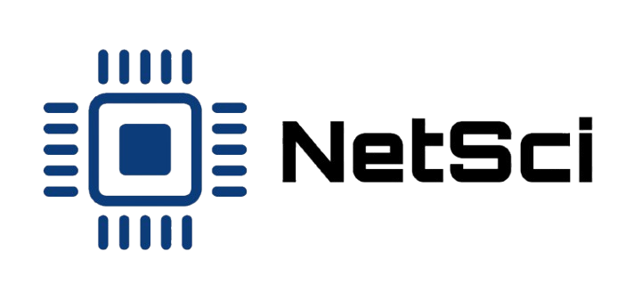

Bienvenido a NetSci
NetSci es una feria organizada por estudiantes de Ingeniería en Desarrollo de Software (IDS) de Tecmilenio, donde presentan sus proyectos finales a la comunidad académica y empresarial. En el evento, los equipos compiten para desarrollar la mejor solución a un caso real de consultoría en redes.
Descubre másObjetivo Principal
El objetivo es proporcionar una plataforma para que los estudiantes muestren su creatividad y conocimientos en el desarrollo de soluciones tecnológicas innovadoras. Este evento tiene como propósito reunir a profesionistas, líderes de la industria y expertos en tecnología, creando un espacio de colaboración donde los estudiantes puedan exponer sus soluciones a un caso de consultoría real en redes y recibir retroalimentación constructiva de profesionales del sector
Organizadores de la feria
Esta feria es traida hacia usted por los el equipo organizador de la feria y la maestra respectiva de la materia
Maestra Blanca Aracely
Maestra y Organizadora principal

Héctor Ortega
Product Owner, Lead Developer y todo el equipo de Desarrollo

Elizer de la Cruz
Organizador de la feria

Erick Santiago
Organizador de la feria

Andres Abarca
Organizador de la feria

Emilia Garcia
Organizadora de la feria

Alex Roman
Organizador de la feria

Miguel Muñoz
Organizador de la feria por parte del Laboratorio 2
Tesis

Beneficios:
- Networking: Conoce a líderes de la industria tecnológica y haz conexiones clave para tu futuro profesional.
- Aprendizaje: Participar en una experiencia única donde podrás ver cómo los estudiantes resuelven desafíos reales, aprendiendo de sus enfoques y soluciones.

El Caso de Estudio:
El desafío de NetSci se basa en el caso de TecmiCorp, una empresa que se encuentra en pleno proceso de expansión. TecmiCorp requiere una infraestructura de red sólida, segura y escalable para mejorar su conectividad entre su sede central y sus diversas sucursales
Los equipos deberán diseñar una solución integral que optimice la conectividad de la empresa.

Requerimientos del Caso:
- Sede Central: 10 dispositivos finales (5 PCs y 5 laptops), con su propio switch y router.
- Cada Sucursal: 4 dispositivos (1 PC y 3 laptops), con su propio switch y router.
- Conectividad: Comunicación inalámbrica entre la sede central y las sucursales, con una conexión cableada interna en cada ubicación.

Los Equipos Competidores:
Cada equipo competirá con su propuesta de infraestructura de red, tomando en cuenta aspectos clave como la seguridad, escalabilidad, eficiencia y costo. Los estudiantes deberán pensar en soluciones innovadoras que optimicen tanto la conectividad interna como la comunicación remota entre las diferentes sedes.
- Estudiantes de Ingeniería en Desarrollo de Software (IDS) de Tecmilenio, quienes presentarán sus proyectos finales desarrollados a lo largo de su carrera.
- Líderes del sector tecnológico que ofrecerán retroalimentación directa y asesoramiento sobre las soluciones presentadas.
Que estas esperando? Quieres averiguar los equipos participantes? Da click en el boton de abajo para saber quienes son los equipos participantes!